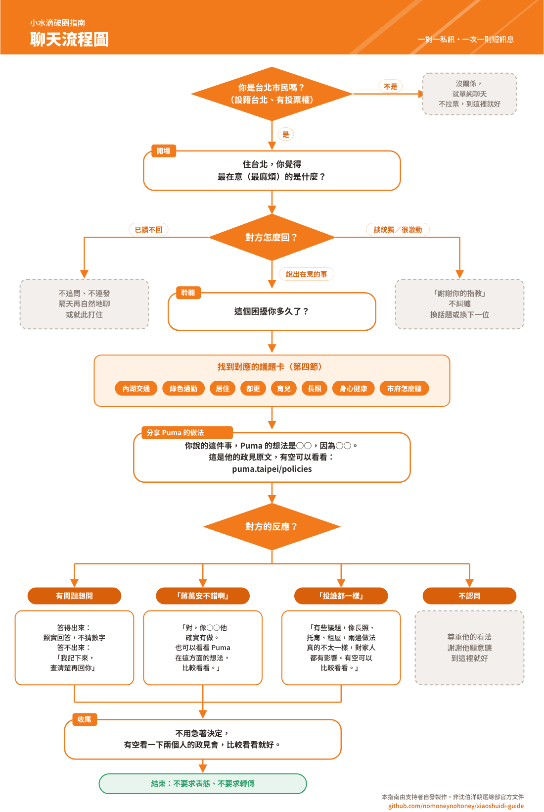

他的看法是：台北人每個都很努力，但城市的腳步沒跟上，所以市府應該多陪伴、多分擔。台北已經從「沒有」走到「有」，接下來要從「有」走到「好」，重點是一點一點改善，不是大破大立。
口號是「台北順起來」：讓長輩多一點照顧、孩子多一點陪伴、夾在中間的三明治世代有人接住。
他的做事方式是「你說我做」：先蒐集市民意見（「市長，你給我聽好了」平台、街頭肥皂箱），再提出解法。
打字聊天和面對面不一樣：對方隨時可以已讀不回，長訊息也不會被讀完。所以一次只傳一則短訊息，等對方回了再接下一步。
每張卡片先寫一句可以問對方的話，再寫 Puma 的做法和理由，最後一行附上現任的做法供參考。完整政見以 puma.taipei/policies 為準。
我們是支持者，不是候選人，也不是政策幕僚。被問倒很正常，硬答反而容易講錯。我們的任務不是替 Puma 回答每一個問題，而是讓對方願意給他本人一次機會，親自聽他講。
先把這些連結存在 LINE 的 Keep 或記事本裡，對方有興趣時馬上就能傳。只傳官方帳號或主流媒體的完整影片，不要傳剪輯過的片段。
把前面幾節串起來，聊天時照著走就好。這張圖也可以單獨存到手機：chat-flow.png ↗

點標題可以直接開啟原文。
這份指南放在 GitHub 公開倉庫，有 PDF 和 Markdown 兩種格式，之後的更新也會放在這裡：
github.com/nomoneynohoney/xiaoshuidi-guide ↗
PDF 直接下載：xiaoshuidi-guide.pdf ↗
版本 V1.0.0・2026-11-19